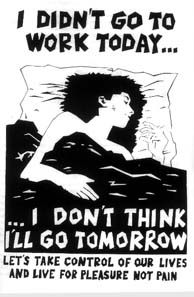

Submitted on Wed, 08/31/2005 - 2:31am
Disclaimer - The following article is reposted here because it is an issue with some relevance to the IWW. The views of the author and the publisher do not necessarily agree with those of the IWW and vice versa. (Plus, they gave us a plug, so it's only right to return the favor!)
Originally published on www.indybay.org
 Victory! We are happy to report the Cheesecake Factory has finally settled and workers will finally get their rightful piece of the pie. For three years, workers were denied breaks in the busiest and most profitable restaurant in the City. After two years of actions, worker organizing and public pressure, we won back pay and a new system! Workers across the state will get a $4.5 million settlement.
Victory! We are happy to report the Cheesecake Factory has finally settled and workers will finally get their rightful piece of the pie. For three years, workers were denied breaks in the busiest and most profitable restaurant in the City. After two years of actions, worker organizing and public pressure, we won back pay and a new system! Workers across the state will get a $4.5 million settlement.
Through the course of the campaign, they’ve also won increased wages for the breaker position, instead of paying the breaking worker to take a break. We’ve built a solid crew in the kitchen who are standing up to abusive managers. In perhaps unrelated news, former General Manager Jeff Reznick has been transferred to Pensacola, a little town in mid-Florida. We invite you to celebrate with us and tell the press:
Submitted on Tue, 08/30/2005 - 3:14pm
Disclaimer - The following article is reposted here because it is an issue with some relevance to the IWW. The views of the author and the publisher do not necessarily agree with those of the IWW and vice versa.
Rachel Gordon, San Francisco Chronicle Staff Writer - Tuesday, August 30, 2005 - Original Article.
 A coalition of activists involved in left-leaning political causes in San Francisco called on Municipal Railway passengers to refuse to pay their fares starting Thursday, the day the price for a ride is set to go up.
A coalition of activists involved in left-leaning political causes in San Francisco called on Municipal Railway passengers to refuse to pay their fares starting Thursday, the day the price for a ride is set to go up.
"We refuse to pay more for less service," said Riva Enteen, one of the organizers of the planned strike who publicized their plans at a Mission District rally Monday. "These fare hikes will affect poor people the most."
Starting Thursday, the regular cash fare for bus and train service will go up to $1.50, a 25-cent boost, and the cost of a cable car ride will nearly double to $5. The cash fare for seniors, the disabled and youth will increase 15 cents, to 50 cents.
Submitted on Mon, 08/29/2005 - 3:02pm
On August 15th, Fort McMurray Today ran the following article on the upcoming actions:
Alberta CLAC under fire as new group targets them
By RENATO GANDIA
 To raise awareness of what they feel are unacceptable practices by the Christian Labour Association of Canada (CLAC) the Industrial Workers of the World (IWW) will be holding a rally in three Alberta cities, including Fort McMurray.
To raise awareness of what they feel are unacceptable practices by the Christian Labour Association of Canada (CLAC) the Industrial Workers of the World (IWW) will be holding a rally in three Alberta cities, including Fort McMurray.
’The main point of this rally is to raise awareness and solidarity against CLAC,’ said Bryan Roberts an IWW delegate from Edmonton, today. Scheduled on Aug. 26, the rally will be held in front of the CLAC in the Bob Lamb Industry Education Centre office between 7:30 to 9:30 p.m. ’We just want to raise awareness that CLAC as a union does not really represent its rank and file workers,’ Roberts said.
Early in July, an estimated 4,000 union workers staged a rally here against the CLAC and on the issue of bringing temporary foreign workers to Fort McMurray. This time the focus of the rally will be more general and not just about foreign workers, said Roberts.
Submitted on Mon, 08/29/2005 - 2:40pm
Disclaimer - The following article is reposted here because it is an issue with some relevance to the IWW. The views of the author and the publisher do not necessarily agree with those of the IWW and vice versa.
Suzanne Herel and Heather Knight, Chronicle Staff Writers - San Francisco Chronicle, Monday, August 29, 2005.
(08-29) 09:47 PDT San Francisco (SF Chronicle) -- A number of custodians, cafeteria workers and secretaries for the San Francisco Unified School District made good on their threat to call in sick this morning, the first day of school, to underscore their dissatisfaction with their union’s stalled contract negotiations.
District spokeswoman Lorna Ho said the absences were not expected to cause a significant disruption. “We planned for the worst when we heard there might be a sick-out,” Ho said.
She said it was too early to tell how widespread the action was. “We clearly do have some people at the central office who are not here,” she said.
All the custodians, secretaries and cafeteria workers at Malcolm X Academy elementary school in the Bayview were absent today, so volunteers were answering phones and serving breakfast in the cafeteria.
Submitted on Thu, 08/25/2005 - 9:16pm
Disclaimer - The following article is reposted here because it is an issue with some relevance to the IWW. The views of the author and the publisher do not necessarily agree with those of the IWW and vice versa.
NO MUNI FARE HIKE! NO MUNI SERVICE CUTS!
MUNI plans to raise the adult fare from $1.25 to $1.50 Raise Youth, Senior and Disabled Fares from 35 cents to 50 cents. Lay off 200 drivers and cut runs on 41 lines
While politicians pick the pockets of MUNI riders, they give away millions to downtown corporations, and pay MUNI director Michael Burns $280,000 per year. MUNI wants us to PAY MORE to WAIT LONGER. We say NO WAY!
If MUNI raises the fare on September 1, as now planned, we should respond with a FARE STRIKE. In a fare strike, passengers ride the bus, but do not pay the fare.
Fare strikes work. Last year, a fare strike in Chicago prevented a planned fare hike. In 1998, a fare strike in Los Angeles stopped a fare hike and pressured LA to buy more busses to reduce overcrowding.
Working class people, students, seniors and the disabled depend on MUNI. Together we can stop the fare hike and service cuts.